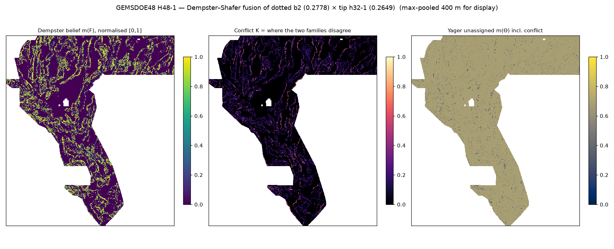
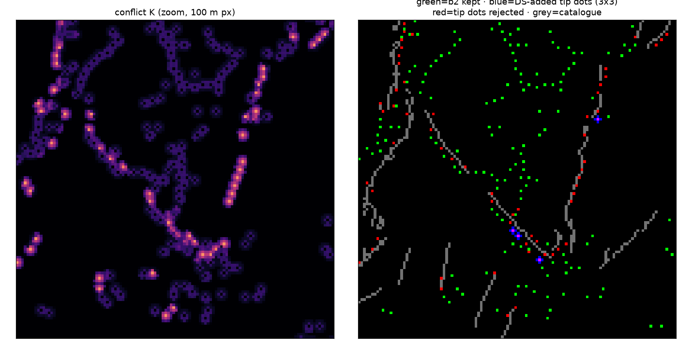
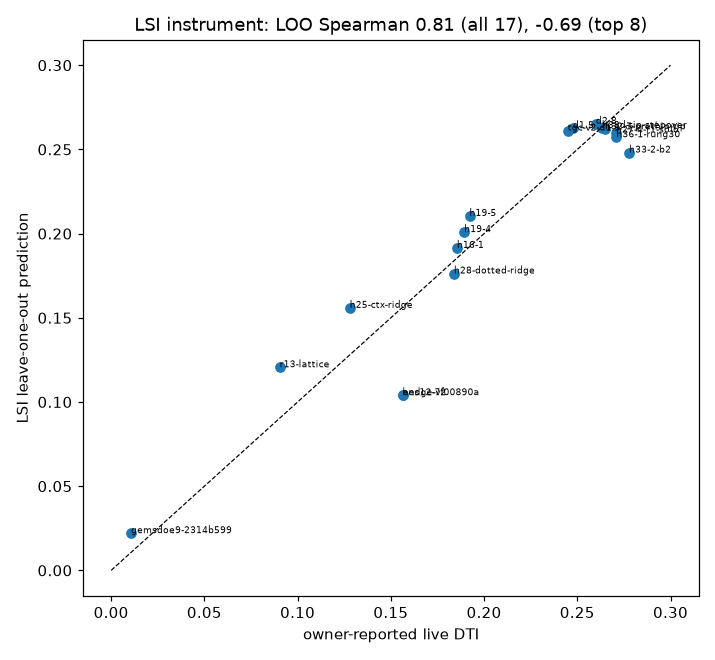

GEMSDOE48 — DOE GEMS Prize fault-discovery system
⬇ Submission file (click to download)
Download gemsdoe48-h48-1-ds-fusion-b2xh32tip-20261006-407bb7f4-zeros.tif
226,886 bytes · sha256 6cb2aab8dbd71335… · 37,754 dots · all-finite float32 in [0, 1] · EPSG:32611 · 3730 × 3292 · all 13 checks PASS · .zip · receipt
Note to paste: GEMSDOE48 H48-1 Dempster-Shafer fusion b2(0.2778) x h32-1 tip(0.2649); pignistic>0.5, NMS 2.8px; 37754 dots, 0 within 200m of catalogue
Executive summary
- What it is. A Dempster–Shafer fusion of the two strongest families: dotted h33-2-b2 (0.2778) × tip h32-1 (0.2649). Disagreement is preserved as its own layer. Unique: no identical support among the 80 sibling GeoTIFFs compared.
- Why 0.2778 won. Precision, not discovery. Mass fell from 121,131 to 37,654 dots while the score rose 0.1922 → 0.2778. The last step deleted the dots within 200 m of the catalogue (method §2).
- Holdout verdict for this file: tie with 0.2778. The downside is bounded at ≥ 0.2773: it is b2 plus 100 dots. No offline instrument can rank differences this small. The SGMC holdout does not predict live scores at all (ρ = −0.17), and the new live-score inversion predicts coarse quality (LOO ρ = 0.81) but not within-family order.
- The board. #1 is 0.3774, not 0.3195 (IR-48-01). The gap is ~0.10. The 100 m layers plateau at 0.26–0.28 across 40+ repos, so the realistic route is native 1 m LiDAR scarp detection (H48-2, data verified obtainable).



Our Core Values. Maximize P(Win): every slot is an experiment, chosen by measured evidence. Own the Outcome: every number links to the code and receipt that produced it, and our own instruments' failures are published (irregularities).
GEMSDOE48 · built from docs/md/index.md by scripts/build_site.py